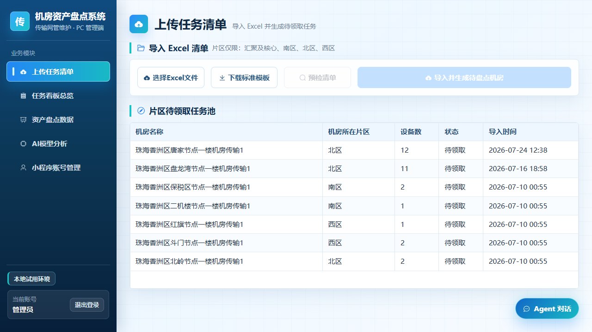
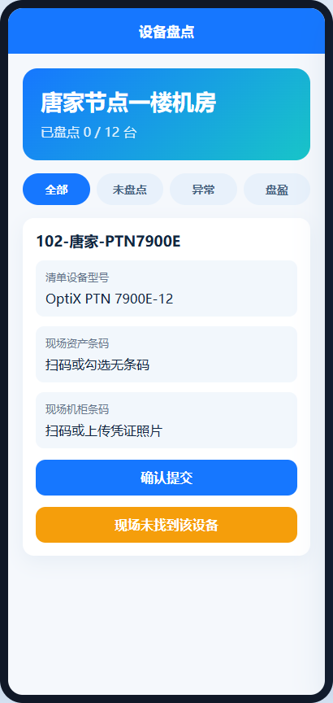
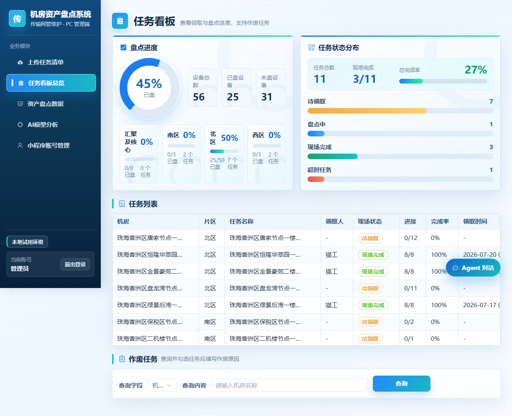
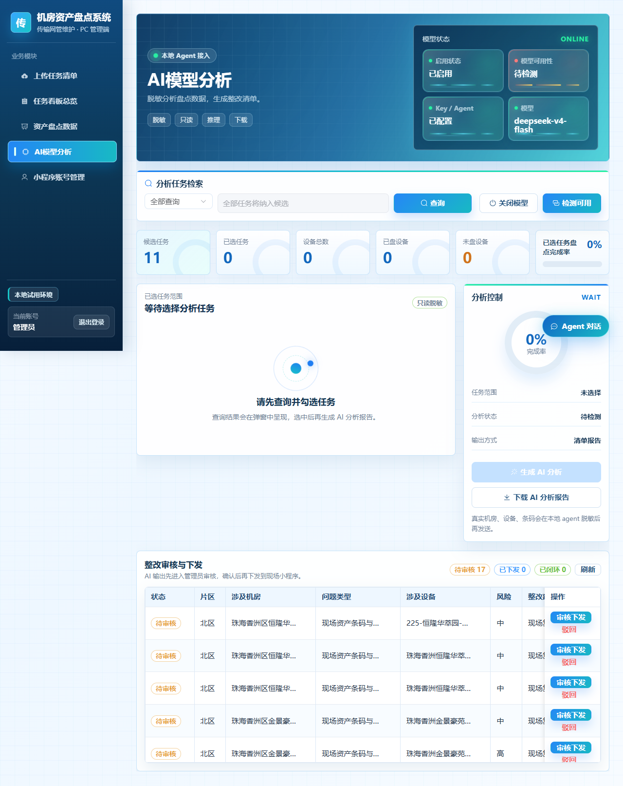
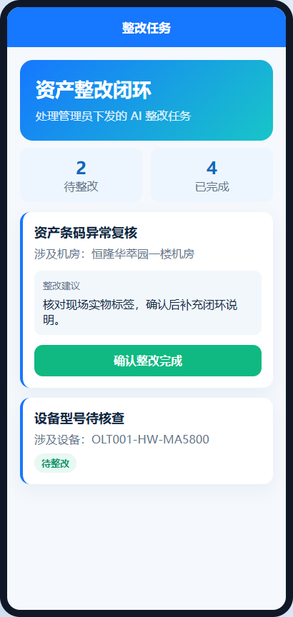

01 / 项目汇报 · TRANSMISSION NETWORK / ASSET GOVERNANCE
让资产条码与传输设备，在同一条现场业务链上被看见、被核验、被追溯。
02 / 汇报路线 · ROUTE
03 / 项目定位 · POSITIONING
资产条码 · 固定资产编号 · 账面信息
回答“账上是什么”实物设备 · 机房机架 · 当前状态
回答“现场是什么”网元名称 · 设备型号 · 运维关系
回答“资源如何记录”04 / 业务背景 · CURRENT VIEWS
看资产条码、机房是否存在该条码，重点关注数量和账实一致性。
看网元名称、设备型号、机房、机架和运行维护关系。
需要把条码、设备和位置在同一次操作中采集，并留下可复核的记录。
05 / 业务背景 · FIELD PAINS
财务资产条码与传输设备信息分散在不同清单。
资产与设备之间没有统一、可查询的关联记录。
设备更换后，旧设备、旧位置和变更原因难以追溯。
现场仍依赖 Excel、纸面记录和人工沟通汇总。
任务分配、盘点进度和超时情况缺少统一平台。
盘盈、盘亏、型号不一致发现后，处理过程容易断开。
06 / 业务背景 · STOCK REALITY
07 / 建设目标 · TARGET
建立资产、设备、机房、机架和历史变更的统一关联。
08 / 数据关系 · RELATION MODEL
09 / 业务流程 · END-TO-END LOOP
10 / 技术架构 · ARCHITECTURE
PC 管理后台只在本机使用，通过本机 FastAPI 完成清单、任务、看板、账号和二维码管理。
先规则识别、字段控制和数据脱敏，再调用模型生成建议；不直接写库或下发整改。
openpyxl 负责 Excel 预检 / 导出；公网只给小程序走 HTTPS，后端保持 127.0.0.1 监听。
11 / 技术架构 · STACK LAYERS
异常分析可以自动运行；下发整改、处理反馈和状态变更必须回到管理员确认。
Cloudflare Tunnel 连接本机服务，当前适合小范围试点，生产化仍需升级基础设施。
12 / 任务准备 · DATA PREPARATION

PC 后台：上传清单、预检并生成待领取任务13 / 任务执行 · 任务生成与片区分配
导入清单、生成任务、查看全量进度、筛选并作废无效任务。
查看所属片区任务池，领取或释放任务，执行扫码和整改反馈。
待领取 → 盘点中 → 现场完成；超时和异常进入管理视角。
14 / 现场盘点 · 小程序操作流程
15 / 现场盘点 · 扫码记录与现场证据

小程序：设备扫码盘点16 / 异常识别 · 盘盈盘亏与关系异常
现场无法确认设备存在时，明确记录未找到，不用伪造扫码结果。
把清单外设备登记出来，补充型号、条码和现场位置，等待后台核查。
无条码、条码与设备不匹配、机柜或机架信息缺失，都保留为待核查事实。
17 / 管理闭环 · PC 后台能力

PC 后台：片区进度、任务状态和超时任务18 / 智能分析 · AI 异常分析

PC 后台：AI 分析与整改审核19 / 整改闭环 · 人工审核与现场反馈

小程序：整改任务与完成反馈20 / 安全边界 · SECURITY BOUNDARY
21 / 建设状态 · STATUS & ROADMAP
PC 后台、小程序、FastAPI 基本功能；清单导入、任务生成、现场盘点、导出、盘盈盘亏、AI 分析与整改闭环；Tunnel、WAF、限流、构建测试和公网健康检查。
主机防火墙；数据库 / 备份目录权限；自动备份与恢复演练；审计日志；二维码授权；整改照片、凭证和复核意见。
细化角色和片区权限；服务异常与 Tunnel 监控；周期盘点和自动周报；对接资产 / 资源 / CMDB；多维护中心数据隔离。
部署专用服务器、专网或 VPN；迁移生产级数据库；建立高可用、灾备和正式安全测评；形成统一传输网资产数据标准。
22 / 推广路线 · ROLLOUT & METRICS
验证完整盘点、异常识别和整改闭环流程。
固化 Excel 模板、任务规则、操作流程和反馈机制。
建立统一权限、备份、安全和运维体系。
23 / 开发实践 · AI-ASSISTED DEVELOPMENT
FastAPI 接口、Vue 管理页面、微信小程序交互、数据库结构、Excel 导入预检导出、Local Agent、测试与部署脚本、安全风险检查。
提供传输网场景和规则，确定资产 / 设备 / 机房 / 机架关系，判断盘盈盘亏含义，验证现场习惯，决定 AI 建议是否可执行并负责最终验收。
24 / 汇报结论 · NEXT STEP
从清单导入、现场扫码，到异常分析和整改反馈，已实现财务资产视角与传输运维视角的结合。
验证盘点流程、关系口径、数据质量和整改闭环是否符合现场实际。
完成主机、数据库、备份、权限、审计、监控和专项安全测试。